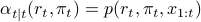
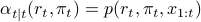
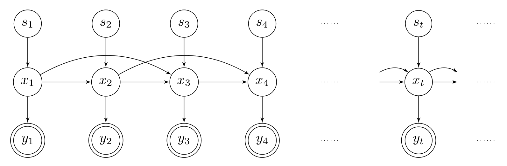
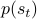
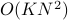
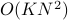

Before PhD
Below are the projects I worked on before my PhD:
Asynchronous Stochastic Quasi-Newton MCMC for Non-Convex Optimization (2017 Summer) [ICML 2018, pdf]
Abstract: Recent studies have illustrated that stochastic gradient Markov Chain Monte Carlo techniques have a strong potential in non-convex optimization, where local and global convergence guarantees can be shown under certain conditions. By building up on this recent theory, in this study, we develop an asynchronous-parallel stochastic L-BFGS algorithm for non-convex optimization. The proposed algorithm is suitable for both distributed and shared-memory settings. We provide formal theoretical analysis and show that the proposed method achieves an ergodic convergence rate of O(1/√N) (N being the total number of iterations) and it can achieve a linear speedup under certain conditions. We perform several experiments on both synthetic and real datasets. The results support our theory and show that the proposed algorithm provides a significant speedup over the recently proposed synchronous distributed L-BFGS algorithm.
Bayesian Multiple Change Point Model for DDoS Detection in SIP Networks (2015-2017) [notebook, paper1, paper2 ]
The goal in this project is to build a firewall for SIP (Session Initiation Protocol) networks. SIP is currently the most popular protocol that enables session control in computer communication networks and therefore, SIP servers have become targets of various attacks, such as DDoS (Distributed Denial of Service) attacks. DDoS attacks usually result in an abrupt change in the network traffic.
To detect such changes, we built a Bayesian multiple change point model, whose input is a set of features extracted from target computer's network traffic. The observation at time  ,
,  , is assumed to be a random variable generated from a multinomial distribution with an unknown parameter
, is assumed to be a random variable generated from a multinomial distribution with an unknown parameter  . At change points, or when
. At change points, or when  , is reset to a new value; otherwise, it keeps its value unchanged. Considering all together, the generative model of BCPM can be expressed as follows:
, is reset to a new value; otherwise, it keeps its value unchanged. Considering all together, the generative model of BCPM can be expressed as follows:
 |
In the model, deciding whether a change has occurred at time is tantamount to calculating the posterior probability of  . This can be done by writing the forward recursions () and integrating out. If the task is not online, the posterior can be calculated conditioned on the full history of observations. When the reset model is the conjugate prior of the observation model, inference task becomes tractable. Gamma-Poisson model for one dimensional observations or Dirichlet-Multinomial model when observations are of higher orders can be useful. Of course, it is also possible to combine those two models in a single model, which we investigate in a paper (to-be-published).
. This can be done by writing the forward recursions () and integrating out. If the task is not online, the posterior can be calculated conditioned on the full history of observations. When the reset model is the conjugate prior of the observation model, inference task becomes tractable. Gamma-Poisson model for one dimensional observations or Dirichlet-Multinomial model when observations are of higher orders can be useful. Of course, it is also possible to combine those two models in a single model, which we investigate in a paper (to-be-published).
![begin{array}{ll} pi_0 &sim mathcal{D}ir(pi_0; a) r_t &sim mathcal{BE}(r_t; p) pi_t | r_t, pi_{t-1} &sim [r_{t}=0] delta(pi_{t} - pi_{t-1}) + [r_{t}=1] mathcal{D}ir(pi_t; a) x_t | pi_t &sim mathcal{M}(x_t; pi_t) end{array}](eqs/3146459144825046774-130.png)
or
![begin{array}{ll} pi_0 &sim mathcal{G}(pi_0; a) r_t &sim mathcal{BE}(r_t; p) pi_t | r_t, pi_{t-1} &sim [r_{t}=0] delta(pi_{t} - pi_{t-1}) + [r_{t}=1] mathcal{G}(pi_t; a) x_t | pi_t &sim mathcal{P}(x_t; pi_t) end{array}](eqs/7609278981240920997-130.png)
I collected all my work on this model, including derivations and the implementation, in a jupyter notebook under my github repo (see Bayesian_Change_Point_Model.ipynb). With python3.5 and necessary libraries installed, you can run the inference algorithm for your tasks. You can see the forward/backward recursion, calculation of smoothed densities and parameter learning via EM algorithm in the notebook.
Mixed Memory Hidden Markov Model for Optimal Newspaper Delivery (2015)
In this work, we are interested in the prediction of newspaper sales distributed to 2000+ outlets in Istanbul. This is actually a classical example of an optimization problem: A newspaper outlet would like to meet all customer demands, which actually can be achieved if the outlet receives more newspapers than it could sell from the distributor. However, the distributor has to collect the unsold newspapers next day, and this creates an additional cost.
The start of the project dates back to my first semester in grad school. This is why we approached the project from more of a pedagogical standpoint and tried to build and make the inference on my own model, which we refer as Mixed Memory Hidden Markov Model(MMHMM). The structure of MMHMM looks like the classical HMM (and maybe Factorial HMM) but we were essentially inspired by Mixed Memory Markov Model (MMMM).
|  |
The graphical model for  order MMHMM is given above. In this model demand is latent, forms a Markov chain (here, the order is 2) and the relationship between demands on different days is governed by another set of latent states. When the order of Markov chain is
order MMHMM is given above. In this model demand is latent, forms a Markov chain (here, the order is 2) and the relationship between demands on different days is governed by another set of latent states. When the order of Markov chain is  , we do not specify a
, we do not specify a  dimensional transition matrix but we make the following parametrization:
dimensional transition matrix but we make the following parametrization:

Here,  is a dimensional probability vector that weights the transitions and transitions with different orders are governed by different matrices. In general, transition matrix for order  is denoted as
is denoted as  . If can take
. If can take  different values, this mixture model brings state space from an explosion -
different values, this mixture model brings state space from an explosion - parameters- to a reasonable state with  parameters. We finally have an observation probability matrix with
parameters- to a reasonable state with  parameters. We finally have an observation probability matrix with  parameters, if the number of observations is
parameters, if the number of observations is  .
.
Other than inference, we wanted to learn the model parameters that best fit our dataset. So, we derived EM updates for parameter learning. To sample from posterior distributions, I used Gibbs samplers, particle filters and Metropolis-Hastings algorithm as the state space is so large (and I took the Monte Carlo Methods course in the meantime).
The output of this work was this poster and I have not been able to revisit and extend my work for a year or so. Yet, I am planning to implement exact EM updates with reduced time complexity and hopefully update this section:)
Graph Theoratical Approach to Epilepsy (2014)
Back on my last year as an undergrad, I was quite interested in graphs and social networks, in particular. Moreover, one part of mine has always been also into neuroscience. So, my graduation project was about investigating whether epilepsy is a genetically transmitted disease through graph theoratical approaches.
I worked on a real-world dataset, collected from a village (in Turkey) with high epilepsy rate. I first examined general structure of the graph and recorded some interesting information:
Epilepsy frequency of a particular relative is higher in the family background of the epileptics than that of healthy ones, which may imply epilepsy being genetically transmitted
Epilepsy frequency of a particular relative is higher in the family background of male epileptics than that of female epileptics.
I then tried to modify Google's PageRank algorithm to extract a general property among the paths from one epileptic to another in the graph. The attempt was a fail.
This article gave me an idea of the transmission of diseases. Using the genetic relatedness facts in the article, I attempted to build a probabilistic model, in which the probability of a newborn to be epileptic is contioned to his/her ancestors’ carrying disease or not. Yet, the model failed to explain the dataset, although I put a lot of effort on tuning the parameters.
So, this was before I know some machine learning. Currently, I am planning to apply different classifiers that may possibly divide the dataset into two (epileptics and healthy people). Note that I am not an expert of epilepsy and would actually love to hear about what features I should work with for the classification problem.